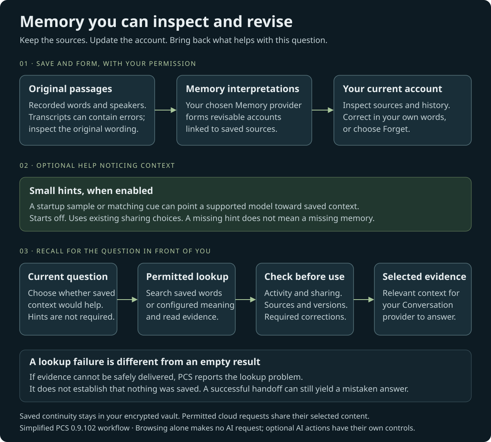
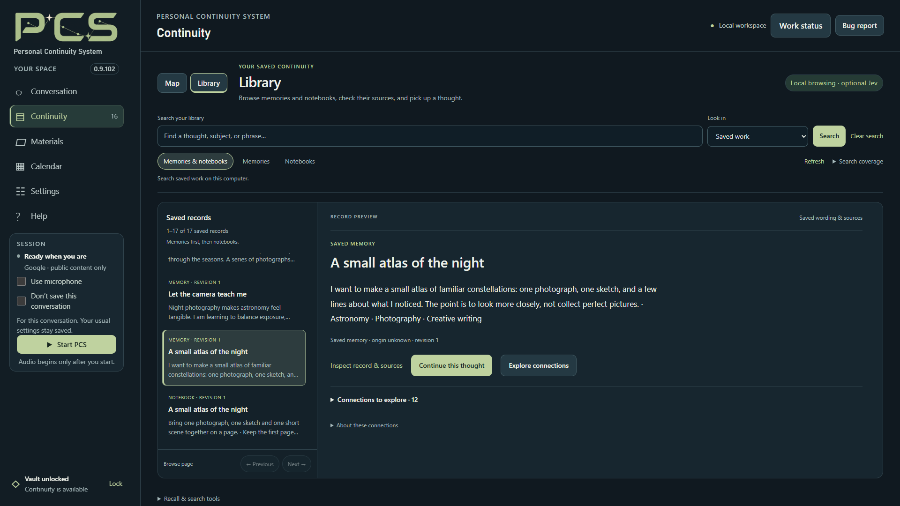
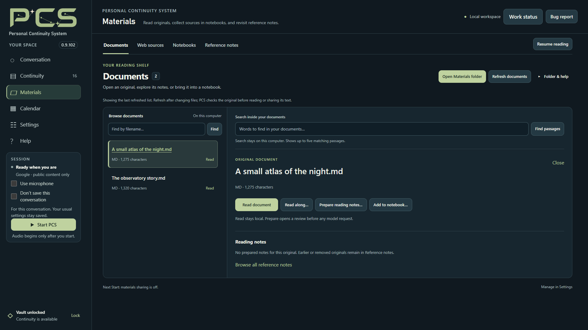
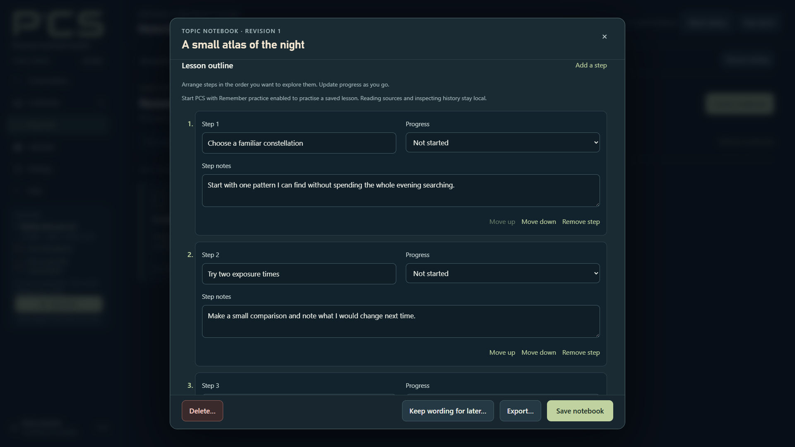

From a conversation to useful context
With saving and learning enabled, PCS retains original conversation passages and uses the selected memory model to form source-linked interpretations. Saving the original and forming a memory are separate steps. A retained passage can exist before a useful memory has been formed.
Conversation and memory processing can use different supported providers, including Local, Google, OpenAI and Meta. Review the selected roles and sharing choices in Settings. Changing the model does not move the saved continuity out of your vault.


Your corrections remain distinct from earlier interpretations. Automatic memory formation preserves owner corrections, and recall keeps required current corrections with the evidence they qualify. If that combination cannot fit or is no longer current, PCS can withhold it.
Inspect a memory and correct it
- Open Continuity → Library and select a memory.
- Read its original sources and revision history. Distinguish what you said from the interpretation made from it.
- Choose Correct this memory in your own words, then Incorrect, Changed, Applies in a specific context, or Forget.
- Enter your wording and choose Preview change. Review the effects before saving; Forget reviews dependent saved work.


After an uncertain plain-language save, choose Review latest saved revision, compare it with your retained wording, then preview again. Advanced JSON has its separate Review latest saved memory action. Reviewing does not save either draft, and unfinished text in the other editor stays intact.
PCS keeps recorded authorship—Owner, model or unknown—separate from editable wording. Applicability wording explains context, not an access or spoiler filter. A correction cannot erase text already delivered to a conversation model; use a fresh conversation to continue without that earlier context.
A correction can also change the words used to find a record. For a name record previously selected for the start of a conversation, PCS can preserve its identity across your correction so a fresh Start can consult the current account. This internal link does not declare a preferred name or grant permission to share it; current corrections and sharing checks still apply.
Find saved work searches the coverage stated beside each group, including lesson text and retained quotations. Choose My Map notes or Practice history explicitly to find your connection notes or a question whose assessment you disputed. Searching from Map opens Library so you can follow the result to its owning feature. Open the current record before changing it. Original-document search and Resume reading stay in Materials.
The Continuity Map offers another route into the records. Follow a connection, inspect its support, and review a draft to bring selected records into Conversation.
Map and Library use your meaningful correction wording without treating internal correction bookkeeping as a theme or excerpt. Map evidence preserves the saved spelling across more Unicode forms. These repairs improve source presentation; a connection is still something to inspect, not a conclusion about you.
Choose what recall can use
Open Settings → Memory & sharing → Personal memory. Read the learning and original-source choices saved for your selected connection. Recall returns selected evidence within your permissions and the model’s context limits; it does not send the whole vault.
Your continuity is separate from the model. Changing a supported provider leaves saved originals, memories, corrections and notebooks in the same vault. The next model can work with permitted evidence from those records; it may interpret or recall them differently. Learn about switching connections.
Find references in saved conversation passages can recover details that never became a memory. This needs permission to share originals. Search by meaning can complement word search; the optional Local Nomic search model runs on CPU without cloud embeddings.
Meta can use permitted text recall, but it does not supply vector embeddings in PCS. Evidence handoffs remain bounded and retain current corrections and source checks. A completed lookup does not prove that the following model answer used it correctly.
Recall can miss a detail, select an imperfect match or choose no callback. Inspect important evidence and correct mistakes. An earlier experience does not prove what you think or need now.
Questions about earlier decisions, your name or a saved project can call for recall naturally. Local 0.9.102 checks that need before replying, without requiring you to say “use memory” first. The normal activity and sharing boundaries still apply. A separate PCS lookup notice can report a blocked or failed read: that is different from a completed search with no matching result, and neither proves that nothing relevant exists elsewhere.
Optional help noticing earlier context
Help notice relevant memories in conversation is under Settings → Memory & sharing → Personal memory. It starts off, applies on the next Start and requires the existing personal-memory sharing choices. It does not grant access on its own and is not a prerequisite for Local’s reply-context check.
Local and Meta can receive matching cues on typed and completed spoken turns, including when Vision is enabled. Supported Google and OpenAI connections receive a small startup directory; they do not get a new locally matched cue after every spoken turn. Qwen has no new memory-hint support. Cues can miss relevant wording. A missing hint does not mean a missing memory, and a short preview is a pointer to inspect, not proof of a fact.
The lookup for a hint is local and needs no extra model generation. A hint supplied to a cloud conversation still shares selected saved content and uses input context. Current corrections, activity restrictions and sharing choices remain in force.
Search indexes can change without deleting memories
While stopped, open Continuity → Library → Recall & search tools → Search capacity…. This local, key-free review shows current vector use and the room needed for the selected Memory provider. Word search works without these semantic search vectors.
You can explicitly review and retire an old Google or OpenAI search index. PCS preserves memory wording, sources, revisions, corrections and the current provider’s index. A separate Rebuild memory search… action requires its own provider-sharing review; retiring an index starts no provider request. If you later switch back, word search remains available until you approve rebuilding that provider’s index.
Try a connection from a saved thought
In Continuity → Library, select a record and choose Explore connections. PCS proposes a small shortlist from a local word search across memories and notebook titles, goals and notes, so older wording can participate. Add a question, remove candidates or choose records yourself, up to six. Different vocabulary can still hide a useful connection.
This optional trial uses a TypeSafe Jev key from Settings → Optional tools → Jev. Its conversation switch can remain off. Review the exact saved excerpts, your question and required current corrections, then separately permit this request and choose Find useful connections. Opening the review makes no cloud request; approving it sends the reviewed content to TypeSafe under its terms and charges.
Jev’s suggestions about relevance, repetition or possible disagreement are provisional. Inspect the complete records and their sources. Follow or dismiss a suggestion to inform a later review; another request still needs a fresh action and permission. This flow does not automatically save a memory, correction, Map connection or preference. Each approval allows one request with a three-second deadline, without automatic retry or fallback.
Reading notes and research notes have different sources
Prepared reading notes come from selected Materials. Retained research notes preserve research such as Wikipedia Study. An empty or unavailable result in one category does not establish that the other category is empty. Current provider guidance names both, while source and sharing checks remain in force.
You can inspect restored prepared notes locally without their original files. For conversation access, the unchanged original must be available after Materials refresh. An unavailable original no longer blocks unrelated available prepared notes. Keep the original filenames, contents and subfolders when moving Materials.


Keep exact wording, then choose where it belongs
Use Keep draft below the Conversation message box, or Keep wording for later on a selected record or message. Review the complete wording, title and recorded authorship. Pasted or mixed wording stays unidentified unless you explicitly identify it as your own note. Keeping a thought does not mean you agree with it.
Open Kept for later below the composer. Continue places a complete, labeled draft in an empty composer for you to review and send. It does not send automatically. Kept text allows up to 6,000 Unicode code points; attribution and changed-evidence warnings count toward the complete 12,000-code-point Conversation draft. If it cannot fit, PCS explains why without shortening it or replacing your current draft.
Choose Keep a stopping point beneath the composer to leave your own note, optional next step and pin. Edit, resolve or reopen it on the same shelf. Quoted wording and authorship remain intact, with your next step separate. On the welcome screen, Load saved threads brings a pinned or recent open thought forward. Review & continue prepares its wording and next step in an editable draft, preserving any unsent message. A context strip keeps the chosen thought within reach across the workspace. You can attach a UTF-8 .txt or .md file and open the normal Keep review for its complete text. Capture can hold up to 120,000 characters and 480,000 UTF-8 bytes, but Keep still requires the complete wording to fit its 6,000-character limit. Oversized actions explain the limit and retain the reviewed text. A local Materials copy is another choice while stopped; that ordinary file is outside the encrypted vault.
- Select a kept thought and choose Add quoted thought….
- Choose an existing Notebook’s general notes or a lesson, or create a Calendar plan with the title and timing you choose.
- Write your own framing separately. Review the exact quotation, authorship, evidence state and destination before saving.
The original wording remains in a separate Quoted contributions section; your framing becomes ordinary destination notes. Quotations are available for local inspection and export. Current Notebook and Calendar model tools read ordinary fields, not the attached quotation bodies, so your framing follows the destination’s usual sharing permissions. An unencrypted export is a separate readable file.


After an uncertain addition, choose Check unconfirmed addition before trying again. PCS reconciles that same operation to avoid duplicates. Removing a shelf bookmark leaves an attached quotation in its destination. Remove this quotation removes that separate contribution while preserving your notes.
Selected records retain their exact references and revisions. Changed evidence needs review; forgetting linked evidence can remove kept copies and attached quotations. Model-written or mixed copies are removed conservatively when complete source exposure cannot be established. A verified selection is not proof that PCS knows everything a model saw. See first-save reader requirements before using these features with a vault you may reopen in an older PCS.
Choose memories for the current activity
Open Activity in the Conversation toolbar to describe a book, game, film, series or real-life situation. Add progress and the kind of help you want. Optional Automatically follow my current activity uses your current words; it does not grant permission to share saved accounts. You can still set details manually.
For a spoiler-limited story activity, choose Choose memories for this activity while stopped. Review the complete current accounts and required corrections before approving. Saved approvals belong to the exact activity and account revisions you reviewed. Changed accounts or activity settings require review again. No approval means no saved memory is supplied for that scope.
Automatic following waits for current activity classification before supplying saved memory. A later activity or progress change applies to saved-memory context in a fresh conversation: use Use for next conversation, Stop, then Start. If unidentified speech overlaps typing, PCS explains that automatic voice following is paused for that conversation; use typing on a supported route or start a fresh conversation to resume it.
Enabled public research stays available. Ordinary questions about controls, DLC, hardware or unrelated topics need no extra activity approval or conversation restart, including while automatic following is waiting or pending. Title, edition and known progress guide relevant story answers; PCS is instructed to ask before revealing later events unless you request them. Spoiler avoidance is best effort. Public research does not grant access to saved memories.
These controls restrict saved-memory disclosure. Model knowledge and what you say can still contain spoilers, and an approval cannot erase earlier context. Why this? Inspect memory context shows recent memory handoffs with record references; it does not prove which memory caused every answer.
Explore another perspective
Choose a question and up to six saved memories, then review the model and sharing choice before requesting a reflection. Your complete selection stays visible across searches, with Inspect and removal controls. This is separate from activity-memory approval.
The result offers neutral questions, with complete supplied accounts available for inspection. Choose Save this question only if you want to retain it with its model attribution and evidence references. A saved question is not a fact about you. Question relevance remains experimental, and missing memories do not establish a blind spot.
Check saving separately from memory formation
Work status and Saving & memory health show pending work and problems. Work status can take you to the owning feature’s controls without starting or retrying provider work. A reply that says “saved” is not a storage receipt; check PCS’s save result and the record. Local memory processing can work through large originals in smaller sections and wait for quiet conversation periods.
Pending save cards follow the requested operation’s actual result, including a revision, an unchanged record or an uncertain outcome. If a save completes before a reply is interrupted or its permission changes, PCS preserves the confirmed save receipt separately from the reply.
If Saving needs recovery appears, keep PCS open. Choose Recover saving and enter this vault’s passphrase. PCS checks confirmed writes and retries retained text without starting a provider request. Wait for saving to settle before quitting.
Saving, clearing and forgetting
- Don’t save this conversation pauses new PCS saving. Earlier saved records remain. Cloud providers still receive an active cloud conversation.
- Clear chat clears the displayed chat. Hiding the memory stream only hides that panel; neither deletes saved continuity or stops learning.
- Forgetting or deleting changes the selected saved records. It cannot retract content already sent to a provider or remove copies in earlier backups.
Review the current deletion preview: it can include dependent memories, saved questions, kept copies, quotations and unfinished-edit recovery. If the records change, review again. Removing an attached quotation preserves independently written destination notes. Restoring an older backup can bring back information forgotten afterward.
Practice corrections preserve later typing while an earlier save finishes. If unfinished-edit recovery is offered after Lock, inspect the saved assessment first, then copy the wording you still want into that attempt’s correction form. Recovery keeps the attempt and revision context; it never automatically reapplies the correction. See recovery limits.
Keep a restorable copy
Finish or cancel background work, then while stopped and unlocked use Settings → Privacy & maintenance → Backup & restore → Save current backup…. Wait for confirmation and keep the passphrase. Original Materials files and imported text copies need a separate copy; readable exports are not encrypted vault backups.
You can also enable automatic encrypted backups to an existing local or removable-drive folder, or create a protected copy with its own passphrase. Keep a pre-upgrade backup, restore before creating a vault in a fresh installation, and choose the automatic-backup destination again. Saved Meta features and larger draft recovery can require readers 0.9.80 or 0.9.81. Saving pin/next-step metadata or editing an existing kept note requires 0.9.88; see the feature-specific requirements. See backup schedules, passphrases and restore and the upgrade steps.